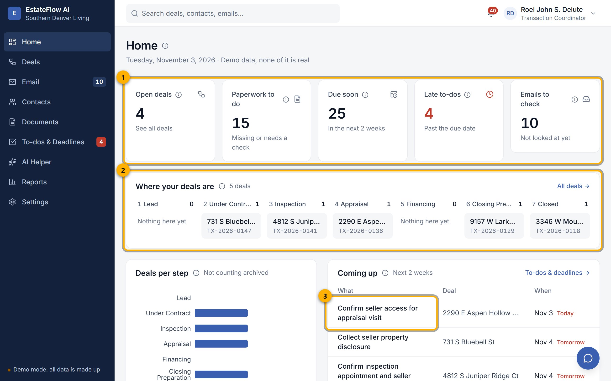

Web Projects / 01
PrototypeEstateFlow AI
A demo workspace for the daily paperwork of a real estate brokerage.

- Summary cards, every number computed from the records
- Deal pipeline by stage
- Upcoming deadlines, today flagged
What it is
A prototype of a transaction coordination tool for a US residential brokerage. It tracks deals, contacts and email in one place. Everything in it is fictional: the brokerage, people, properties, prices and emails are invented for the demo.
How I built it with AI
I directed Claude to build the app module by module, following a written roadmap. The AI chat panel is read-only, so it can answer questions about the data but cannot change it. The small test suite covers CSV export and chat request checks.
Features
- Dashboard with every number computed from the records
- Transactions and contacts
- Demo email center with drafts and a sent folder
- PDF and CSV reports
Built with
Limit
Prototype with fictional data and no backend. Documents, tasks and the AI review desk are planned, not built.